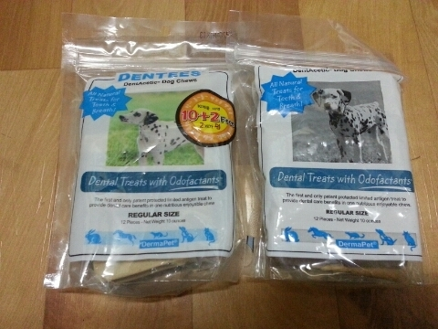
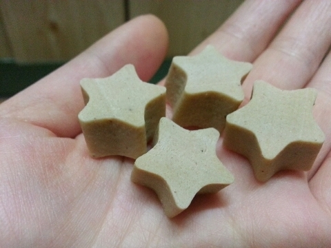
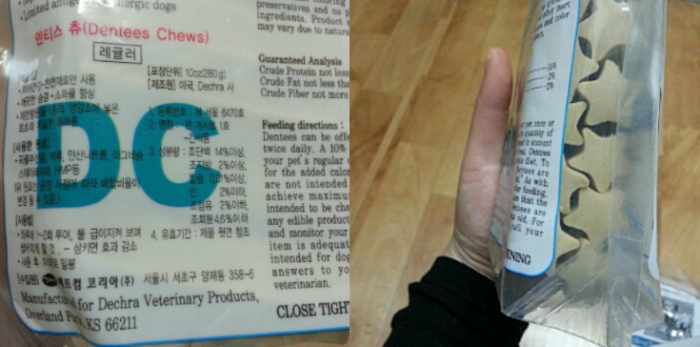
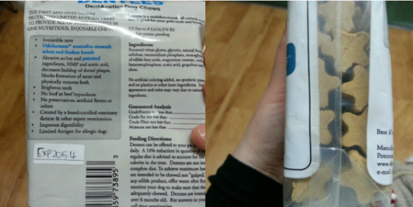
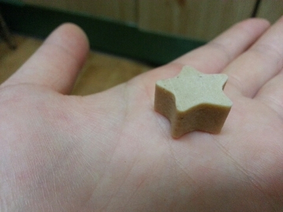
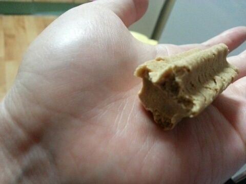
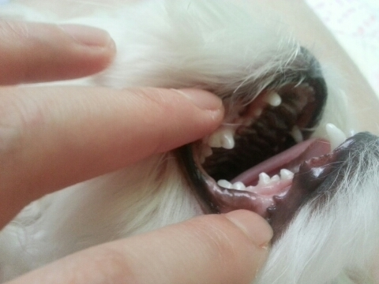

삐삐가 먹는 간식들이 좀 여러가지예요.
왜냐면 애가 입이 짧고, 금방 질려해서
여러가지를 번갈아가면서 주는편인데
덴티스츄는
유일하게, 삐삐가 어릴때부터 먹어오던 제품이예요.
식이알러지로 고생할때도 유일하게 급여했던 덴티스츄 소개합니다.
오른쪽은 미국으로 유통되는 덴티스츄 제품이구요.
왼쪽은 동물병원 전용으로 판매되는 덴티스츄예요.
둘은 성분적으로 조금 다르고
단백질함량이 미국꺼가 좀 더 높다고들 말하지만
오래 급여해본 저로써는
뭐 거기서 거기입니다.
미국용이나 한국용이나.
거기서 거기같은 느낌이예요.

덴티스츄는 높은 기호성과 특허받은 성분으로 플라그를 감소시켜주고
치석형성을 막아 이빨을 깨끗하게 유지하고 잇몸을 단련시켜 줍니다.
소고기나, 소고기 부산물등 육류가 전혀 들어가 있지 않은 야채껌으로 알러지를 최소화하였으며
소화하기 어려운 성분을 최소화하여 소화에 무리가 없습니다.
인공조미료나 인공색소가 전혀 가미되지 않았고 전문수의사들에 의하여 개발된 제품이예요.

동물병원용 덴티스 츄
238그람 최저가 12500 ~ 20000원
일단 이 제품은 흔히들 한국 동물병원이나, 인터넷에서 많이 팔리는 한국용 덴티스츄예요.
표면이 굉장히 매끄럽죠.
동물병원에서는 238그람 2만원정도에 판매하고
제가 보기론 , 인터넷에서 제일 싸게 판매하는거 같아요. 12500원-

미국용 덴티스 츄
238그람 최저가 16000 ~ 18500원
이건 미국에서 판매되고 있는 미국판 덴티스츄
표면이 울퉁불퉁하고 색도 좀 더 짙으면서, 성분이나 함량 부분에서 약간의 차이를 보여요.
그리고 한국판보다는 좀 더 딱딱하고 오래먹는 느낌이 든답니다.
냄새는 둘다 진한 고래밥 냄새가 나요 ㅋㅋㅋㅋ
짠내도 좀 심한편이고.......
기호성은 약간 호불호 갈린다고는 하던데
보편적으로는 거의다 좋아하는거같아요.
씹다보면 약간 쫀득쫀득해 지는데
엘라스틱츄 처럼 찐득찐득하면서도 엄청 쫀득하지는 않답니다.
미국판은 쇼핑몰에서도 구입이 가능하긴한데
직구해서 들여오다보니 가격이 보편적으로 16000원대부터 시작해요.
직구하시면 13000원대인가..기억이 가물가물한데
좀 더 저렴하게 구입 가능하세요

자세히 보시면, 한국판과

미국판에서는 약간 큰 차이를 보여요.

삐삐는 현재 19개월이고,
어렸을때 이갈이가 잘 안되어서 유치발치를 좀 일찍이 했었어요.
유치 발치 하고나서 양치를 하기 시작했으니.. 약 10개월쯤부터 양치를 시작했는데
전 항상 덴티스츄를 반개나, 한츄를 5등분해서 한개씩 주고
밤마다 양치해줬습니다.
그리고, 뼈간식 먹어도 치아관리 잘된다고 하시는분들 많은데
저같은 경우엔, 수제간식은 식이알러지때문에 먹을수 있는거도 몇가지 없고,
냄새에 민감한 저로써는
아이의 입과 털에서 묻어나오는 고기 냄새가 ..너무 역하고
관리하기 힘들어서 안되겠더라구요.
주위에도.. 뼈간식만으로 관리하신분들 보면
치아가 우리애보단..지저분한듯해서..
저는 오롯이 덴티스츄랑 양치만으로 관리한건데
의사 선생님들은 관리잘했다고들 항상 이야기 하세요.
사실, 제가 양치를 해줬기때문에 치아가 깨끗할 확률이 높겠지만
전, 나름대로 덴티스츄의 영향도 있다고 생각합니다.
적극추천해요:)
|